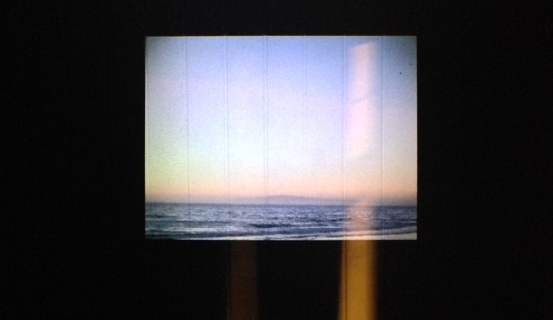

Here are a few pictures from the first weekend of our If Wet 2014 Tour. Wonderful presentations by wonderful artists [thank you!], to an enthusiastic and engaged audience…
The last two events of our tour are this weekend. Preview: Saturday / Sunday. JOIN US.
On the 21st of June we head off around the country, for four events on consecutive weekends. Here is a full list of artists and tour dates. Please save the dates and get your tickets soon, as they are selling and village halls aren’t huge…
It’s hard to overstate quite how delighted we are to be able to bring the following artists to a village hall (nowhere) near you.
Saturday, June 21st, 2-4pm Leslie Deere / Sarah Angliss
Sompting Village Hall, West Sussex – map PREVIEW | TICKETS
Sunday, June 22nd, 2-4pm Hacker Farm / Jules Bushell
Fitzhead Tythe Barn, Somerset – map PREVIEW | TICKETS [NOTE: map position updated – was in wrong place before – sorry!]
Saturday, June 28th, 2-4pm Lee Patterson / Hugs Bison
Bardsea Malt Kiln, Cumbria – map PREVIEW | TICKETS
Sunday, June 29th, 2-4pm Paddy Steer
Callow End Village Hall, Worcestershire – map PREVIEW | TICKETS
We will kick things off as usual, demonstrating the latest work on our Giant Feedback Organ. Originally commissioned by the Southbank Centre, we have continued to develop the sounds this beast can produce and we will share these with you…
MortonUnderwood – Giant Feedback Organ
Next up, we are delighted to have Leslie Deere presenting her work.

Leslie Deere – California Coast
Leslie will be talking about several projects, including an ongoing sound sculpture series, works in progress and KPPG live performance work. Her recent work in progress project, which revolves around field recordings and projected images, will be the starting point. Photographs and sounds were captured in California and Nevada last summer and she has been experimenting with analogue techniques to process the material. Deere recently transmitted some of these sounds live to a sound silo in California for her first KPPG performance. Leslie will also be talking about her ongoing time capsule project, preserving thoughts, musings and moments in time through sound.
Leslie Deere – Amplified Science
Following on from Leslie we are delighted to have Sarah Angliss back at an If Wet.
Sarah Angliss and Hugo
Sarah charmed our audience when she came to the village hall we call home so it seemed like a good idea to invite her back when we were so close to her home of Brighton. She will talk about her automata and how she uses them in her live performances. She has also hinted at a couple of other pieces she would like to discuss and demonstrate. Most exciting!
Here is a recent video of Hugo to whet your appetite:
All being well, this will be accompanied by the usual local ale, grub and cake. JOIN US.
Here is a full list of artists and tour dates. Please save the dates and get your tickets soon, as they are selling and village halls aren’t huge…
It’s hard to overstate quite how delighted we are to be able to bring the following artists to a village hall (nowhere) near you.
Saturday, June 21st, 2-4pm Leslie Deere / Sarah Angliss
Sompting Village Hall, West Sussex – map PREVIEW | TICKETS
Sunday, June 22nd, 2-4pm Hacker Farm / Jules Bushell
Fitzhead Tythe Barn, Somerset – map PREVIEW | TICKETS [NOTE: map position updated – was in wrong place before – sorry!]
Saturday, June 28th, 2-4pm Lee Patterson / Hugs Bison
Bardsea Malt Kiln, Cumbria – map PREVIEW | TICKETS
Sunday, June 29th, 2-4pm Paddy Steer
Callow End Village Hall, Worcestershire – map PREVIEW | TICKETS